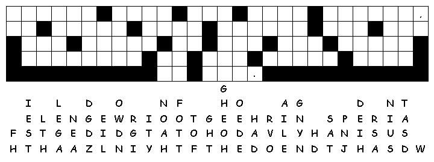
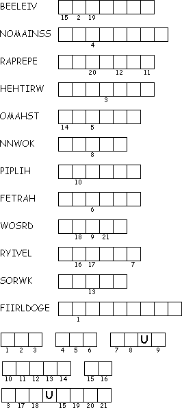

This week's lessons:Acts 7:55-60 , Psalm 31:1-5, 15-16, 1 Peter 2:2-10, John 14:1-14
This
week's lessons:Acts
7:55-60 , Psalm
31:1-5, 15-16, 1
Peter 2:2-10, John
14:1-14
Elementary School Pew-work
Unscramble the bolded words:
But Stephen was filled with the Holy iritSp ___________. He looked toward heenav ___________, where he saw our glorious God and suJes ___________ standing at his right side. Then Shnteep ___________ said, "I see heaven open and the oSn fo anM ______ ___ ______ standing at the right side of God!" The council members shouted and covered their ears. At once they all actedkat ___________ Stephen and dragged him out of the ctyi _______. Then they started throwing nsteos ___________ at him. The men who had brought charges against him put their atosc ___________ at the feet of a young man named Saul. As Stephen was being stoned ___________ to death, he called out, "Lord Jesus, please lceweom ___________ me!" He knelt down and shouted, "Lord, don't amble ___________ them for what they have done." Then he died.
What
did Stephen see when he looked up into
heaven?
______________________________________________________________________
What
did his enemies do to
Stephen?
______________________________________________________________________
Who
held the coats of Stephen's
enemies?
______________________________________________________________________
What
was Stephen's last prayer as he was
dying?
______________________________________________________________________

Created
by Puzzlemaker
at
DiscoverySchool.com
Next week: Acts 17:22-31, Psalm 66:8-20, 1 Peter 3:13-22, John 14:15-21
This
week's lessons: Acts
7:55-60, Psalm
31:1-5, 15-16, 1
Peter 2:2-10, John
14:1-14
Middle-School Pew-work
|
Imagine
God's “house with many dwelling places”. What is it
like?
_______________________________________________ How does
this metaphor encourage you?
__________________ |
 |
Next week: Acts 17:22-31, Psalm 66:8-20, 1 Peter 3:13-22, John 14:15-21